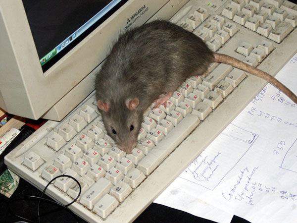
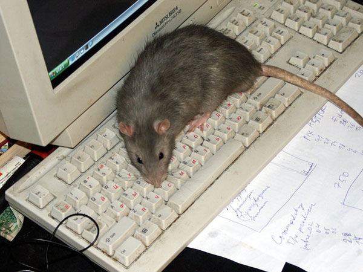

Один
Май 2003
Фотоаппарата под рукой у меня тогда не было, так что благодарю Zilber'а за то, что пробежал мимо с фотоаппаратом...

— На что нажимать, говоришь?
(на фото нарушен цветобаланс)

— Чего прищурился?
Фотоаппарата под рукой у меня тогда не было, так что благодарю Zilber'а за то, что пробежал мимо с фотоаппаратом...

— На что нажимать, говоришь?
(на фото нарушен цветобаланс)
— Чего прищурился?